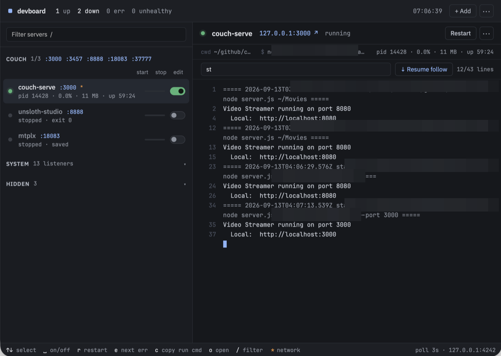

The couch group
The Couch computing saga: 1. One More Hop · 2. A Hoarder's Dream · 3. The couch group
I keep notes on every service I run. Which port, which address, which flags for the home network — keeping track of them is a hassle. So I started a research project to offload all of it to a tool. It found exactly what I wanted.
The notes
The day before, I had built a movie server for the iPad. Point it at a folder, open the browser on port 8080, watch. That part was done. Running it meant remembering the command: which folder, which port, which flags.
Same for the AI models on the same Mac. One answers on port 8888. Another hides behind a helper script that wants its addresses typed out twice, comma-separated, once for the Mac itself and once for the home network. Every launch was a remembered command, and the notes kept growing.
Two finalists
The research came back with two finalists: a small open-source dashboard called devboard, and Harbr. Sidebar of servers, switches, logs. I opened both side by side before touching anything.
Devboard's page had a great screenshot. Exactly the thing I wanted to look at. Harbr's page had a word that ended it: AppleScript. It runs its servers by remote-controlling terminal windows, typing commands into them for you.
If I was going to operate on this thing, I wanted source code I could change.
I opened the door myself
I cloned it and asked the obvious question: can it run on the network, not just on the Mac itself? The answer was in the code, then in capital letters in the manual. The server only listens on localhost. Never otherwise. No remote mode, no login, by design. Its buttons can kill processes and run saved commands.
Fair. So we added an allowlist file with the addresses allowed in. The Mac, the iPad, and Tailscale — the private tunnel that connects my devices even when they're apart. The checks came back green one by one. The iPad reached the dashboard.
The tunnel gives every device its own name. My Mac refused to resolve its own. Asking for itself by name got "unknown host." The iPad across the room opened it fine.
I opened more doors for my iPad
Then the next two problems. The dashboard's "open" button pointed every service at localhost. That only works on the Mac. On the iPad, I got an empty screen.
The copy button was dead. Browsers only let pages copy things on secure connections. A home-network address doesn't count.
I addressed both. Links that know which services leave the machine and which don't. A fallback for the copy button. By evening the group was complete: movies, Unsloth Studio, and the MTPLX server. Each row shows its port and a switch.
The network ones get something extra. A small orange asterisk after the port, with a matching legend at the bottom of the screen.

The first three services I added, couch-serve with the orange asteriskToo many doors
I noticed the couch services from the previous post were also reachable from outside, through the work VPN. The default was to bind to every interface, every network. That's what made it work from the iPad without configuration, but it also meant anyone on the VPN could reach them.
So I adjusted the binding. Instead of every interface, the server now listens on the ones it needs: the Mac, the local network, the tunnel. The zero-configuration flavor stays — you still just run it and it works from the iPad. It just stops answering where it shouldn't.
The list kept growing
I went through my notes looking for every time I had to look up a start command or tell an AI to launch something. Every one of those became a devboard entry. The website folder, so I can start a dev server and check the current state from my iPad. The work setup: app server and database, both behind switches now.
One of the AIs misunderstood me again while I was adding a service. I asked it to add a server to devboard and it started editing devboard's source code. I had to stop it and remind it that everything was just one CLI command away.
From the couch
That night: iPad on the couch, the dashboard open through Tailscale. All the services I care about, ready to be started with one tap.
The research wasn't wrong. It filtered devboard out for showing no signs of life: two days old, zero stars. But in the age of AI, zero stars aren't a turnoff anymore. You just check out the repository and look at the code.
Then I published my changes, left a note on the original project pointing at the updates, and gave it its first star. I left the rest to the maintainer.
The notes are still there. They now point to a different note that says: devboard takes care of them.
Take it, it's yours
The dashboard updates are open source: github.com/scriptease/devboard. The allowlist and the asterisk are in there.